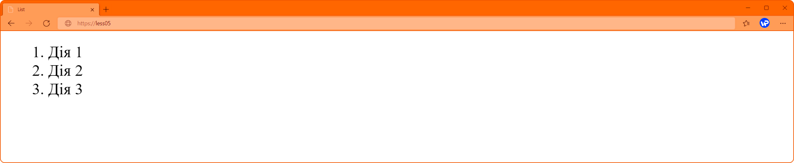
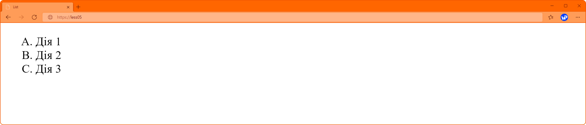
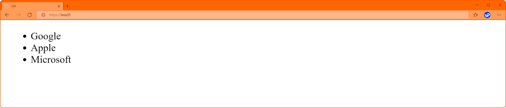
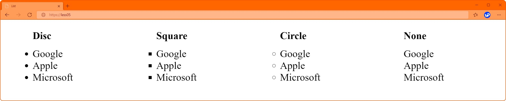
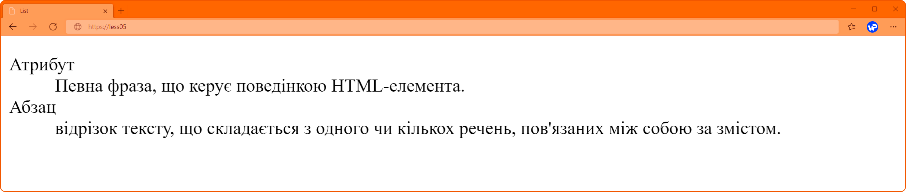

Списки
Списки досить часто використовуються в різних документах. Іноді, щоб зробити список, користувач просто нумерує рядки тексту. Такий підхід не є доцільним, бо в документі буде відсутня така логічна сутність як – "список".
Списком називається взаємопов'язаний набір окремих фраз чи речень, які починаються з маркера або цифри. Списки надають можливість упорядкувати та систематизувати різні дані та подати їх у наочному та зручному для користувача вигляді.
HTML підтримує списки трьох різних типів, для кожного з яких передбачені свої власні теги:
- <ol> – нумерований список, кожен елемент списку має свій порядковий номер;
- <ul> – маркований список, по суті схожий з нумерованим списком, але не містить послідовної нумерації пунктів;
- <dl> – список визначень, складається з пар «ім'я/значення», тобто з термінів та їх визначень.
Кожен список є контейнером, всередині якого розташовуються елементи списку або пари термін-визначення. Елементи списку поводяться як блокові елементи, розташовуючись один під одним і займаючи всю ширину блоку-контейнера. Кожен елемент списку має додатковий блок, розташований збоку, який бере участь у компонуванні.
Нумерований список.
Для групування послідовної інформації використовуються нумеровані списки, важливою особливістю яких є порядковий номер елемента. Тобто, кожному пункту списку браузер автоматично надає власний номер по порядку, починаючи з певного значення (зазвичай 1). В свою чергу, це дозволяє вставляти чи видаляти пункти із списку, не порушуючи нумерації, оскільки нумерація буде автоматично перерахована.
Такі списки зручні, якщо позначається послідовність дій, які потрібно зробити.
Нумерований список створюється за допомоги тегу <ol> (Ordered List – нумерований список), а кожен його пункт повинен знаходитися в елементі <li> (List Item – пункт списку).
<ol>
<li> Дія 1 </li>
<li> Дія 2 </li>
<li> Дія 3 </li>
</ol>
В HTML доступні 5 типів нумерації у списках. Щоб змінити тип нумерації, використовують атрибут type:
- A - великі латинські літери (A, B, C . . .);
- a - малі латинські літери (a, b, c . . .);
- I - великі римські цифри (I, II, III . . .);
- i - малі римські цифри (i, ii, iii . . .);
- 1 - арабські цифри (1, 2, 3 . . .).
<ol type="A">
<li> Дія 1 </li>
<li> Дія 2 </li>
<li> Дія 3 </li>
</ol>
Маркірований список.
Маркірований (невпорядкований) список розмічається тегом <ul> (Unordered list – ненумерований список). Його використовують, коли порядок елементів не є важливим. Наприклад, для розмітки переліку посилань у меню. Пункти списку формуються за допомоги тегу <li>.
<ul>
<li> Google </li>
<li> Apple </li>
<li> Microsoft </li>
</ul>
Для зміни стилю маркера в маркірованому списку <ul> використовують атрибут type, що має наступні значення:
- disc;
- circle;
- square;
- none.

Список описів.
Список, як найкраще підходить для розмітки питань-відповідей, найменувань та визначень, категорій і тем. Створюється за допомогою трьох тегів:
- <dl> визначає сам список описів (Description list);
- <dt> визначає термін (Description term);
- <dd> визначає опис або визначення (Description definition).
<dl>
<dt> Атрибут </dt>
<dd> Певна фраза, що керує поведінкою HTML-елемента. </dd>
<dt> Абзац </dt>
<dd> відрізок тексту, що складається з одного чи кількох речень, пов'язаних між собою за змістом.</dd>
</dl>